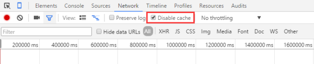

强缓存
原理
当浏览器对某个资源的请求命中了强缓存时，返回的http状态为200。
在chrome的开发者工具的network里面size会显示为from cache。

强缓存是利用Expires或者Cache-Control这两个http response essay-header实现的，它们都用来表示资源在客户端缓存的有效期。
浏览器从磁盘上读取缓存资源
管理强缓存
1).在web服务器上配置，或者通过代码方式，在web服务器返回响应中配置。
2). 清除强缓存
- ctrl+F5
- 浏览器隐身模式
- chrome在network标签下禁止缓存

- 在开发阶段，给资源加上一个动态的参数，如css/index.css?v=0.0001，由于每次资源的修改都要更新引用的位置，同时修改参数的值。
- 如果缓存问题出现在ajax请求中，最有效的解决办法就是ajax的请求地址追加随机数；
- 如果资源引用的页面，被嵌入到了一个iframe里面，可以在iframe的区域右键单击
重新加载该页面